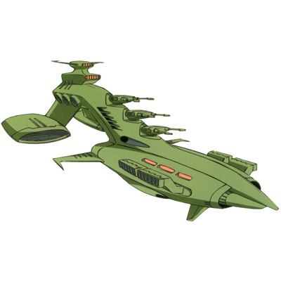
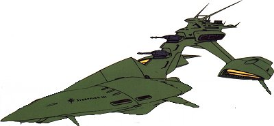
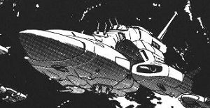
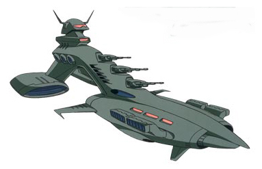
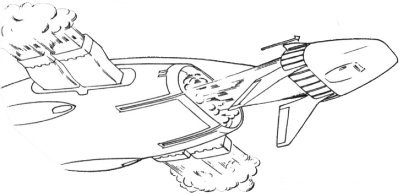
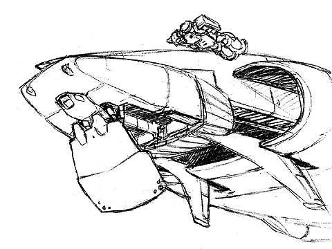
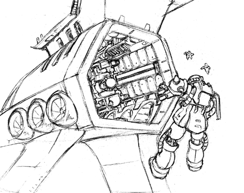

| Musai Zeon Space Force Light Cruiser |
|
|  | |
General and Technical Data |
|
|
Unit type: space-use light cruiser Operator: Zeon Duchy Dimensions: overall length 234 meters; overall width 98.4 meters; overall height 79.4 meters Weight: 26200 tons Construction: High Tensile Steel Propulsion: 2 x rocket engine Design features: Komusai shuttle Hangar capacity: 1 infantry, 3 MS + 2 MS (Komusai) Launch catapults: 1 aft Fixed armaments: 3 x 2-barrel mega particle cannon turret; 10 x missile launcher; 2 x large rocket launcher; 2x fixed AA machinegun (Komusai) |
|
| Technical and Historical Notes | |
|
The Musai-class light cruiser is the standard ship of Zeon's Space Assault Force, and a key unit of the Mobile Assault Force as well. The Musai is a small and fast ship, capable of quickly entering and retreating from a combat zone. Though it is not nearly as heavily armed as the Federation's Salamis-class, its guns are placed more effectively to direct fire at a single target.
The standard Musai class is armed with three double-barreled Mega Particle Cannons, and various light and heavy missile launchers. It is intended more for ranged combat in support of its five mobile suits, rather than close-range interdiction of enemy units. It is equipped with a small Komusai shuttle that attached to its underbelly. The Komusai is used to transfer mobile suits and personnell from the ship to Earth or a space colony where the Musai itself cannot reach. It can also carry two mobile suits and serves as a secondary hangar, and as an escape mechanism for the crew incase of the Musai taking catastrophic damage in battle. It must be re-launched from a spaceport to get into orbit again, however. Initially developed to ferry mobile suits into combat and provide long-range fire support, early Musai class ships entirely lacked close-in weapon systems. Newer models recently produced have corrected this potential flaw. The new production model Musai is armed with five turrets as opposed to the original three, an expanded hangar, and close-in weapons for defense against enemy mobile suits. It also has an improved Komusai II shuttle, which is capable of both atmospheric escape and re-entry unassisted. Later in the war, Zeon economists realized that the new, so called "Final Type" Musai was much too costly for complete refitting, and would remain so until Duchy technology improved. The MAF and SAF each came up with their own stopgap method, in order to correct some of the Musais flaws without causing too much of a drain in the Duchys already dwindling resources. The MAFs version, the so called "Late Production Type" Musai, supports a sleek, high-speed design and increased hangar, on par with the Final Type in terms of combat speed and hangar capacity. However, what it gains in these catagories it loses in weaponry, being armed with a mere 2 double-barreled Musai deck guns. The idea was that, instead of correcting the Musais flaws, just make it better at what it does well. The SAFs version, the "Musai Hellhawk", has a large amount of additional armor plating, giving it even better protection than the Musai Final Type. The engines are re-outfitted to make up for the added mass, and the weapons are upgraded. One MPC turret is removed on the top of the ship, and two added underneath, allowing for a complete spherical firing arc. In addition, an extra pair of anti-ship missiles were added in the front of each engine module.
However, what this version made up for in brute force, it sacrificed in hangar capacity. The additional MPC-turret cut space out of the hangar, allowing for a mere 2 mobile suits.
|
| Weapons and Features | |
|
Musai "Final" Type RPG quick stats sheet Armor Rating: 2.3 Speed Rating: .9 Maneuverability Rating: .9 Sensors Rating: 2.4 MPC Power Rating: 2.9





|
|